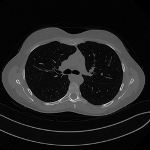

A Brief PyTorch Viewpoint#
Computational Representation and Differentiation#
Note
In these notes, PyTorch is not presented as a software tutorial for its own sake. It is introduced as a concrete language for implementing parameterized maps, computational graphs, and gradient-based optimization in imaging.
Even in a mathematically oriented course, it is helpful to include one short chapter that translates abstract objects into the language of an implementation framework. Otherwise students may understand the equations and still fail to recognize them when they appear in code.
The goal here is not to teach PyTorch as a software package in full generality. The goal is to explain how the mathematical ingredients already introduced in the course are represented computationally.
Tensors as discrete objects.
In PyTorch, the basic object is the tensor. From a mathematical viewpoint, a tensor is simply a multidimensional array, but in practice it carries additional information:
shape, which tells us the dimensions;
data type, which determines numerical precision;
device, which tells us whether the tensor lives on CPU or GPU;
gradient tracking, which tells us whether derivatives with respect to that tensor must be recorded.
For instance, a grayscale image of size \(H \times W\) is represented as a tensor in \(\mathbb{R}^{H \times W}\), while a batch of \(B\) grayscale images is usually stored in the format
with \(C=1\).
This is worth explaining explicitly because shape errors are among the most common mistakes students make when moving from formulas to code.
# Local course asset example: load and normalize one Mayo-style image.
from pathlib import Path
def course_asset_path(name):
here = Path.cwd().resolve()
for base in (here, here.parent, here.parent.parent):
candidate = base / 'imgs' / name
if candidate.exists():
return candidate
raise FileNotFoundError(f'Could not locate imgs/{name} from {here}')
from PIL import Image
from IPython.display import display
import numpy as np
import torch
img = Image.open(course_asset_path('Mayo.png')).convert('L').resize((256, 256))
array = np.array(img, dtype=np.float32)
tensor = torch.tensor(array).unsqueeze(0).unsqueeze(0) / 255.0
print('Notebook-ready tensor shape:', tensor.shape)
print('dtype:', tensor.dtype)
print('intensity range:', float(tensor.min()), float(tensor.max()))
display(img)
Notebook-ready tensor shape: torch.Size([1, 1, 256, 256])
dtype: torch.float32
intensity range: 0.0 0.8627451062202454

import torch
image = torch.arange(16, dtype=torch.float32).reshape(1, 1, 4, 4)
batch = image.repeat(3, 1, 1, 1)
print('Single image shape:', image.shape)
print('Mini-batch shape:', batch.shape)
print('First image in the batch:')
print(batch[0, 0])
Single image shape: torch.Size([1, 1, 4, 4])
Mini-batch shape: torch.Size([3, 1, 4, 4])
First image in the batch:
tensor([[ 0., 1., 2., 3.],
[ 4., 5., 6., 7.],
[ 8., 9., 10., 11.],
[12., 13., 14., 15.]])
Parameters and modules.
A neural network is built by composing modules. Each module corresponds to a parameterized map. For example:
Linearimplements \(\boldsymbol{z} \mapsto W\boldsymbol{z}+\boldsymbol{b}\);Conv2dimplements a discrete convolution with learnable kernels;activation functions implement pointwise nonlinear maps;
normalization layers modify the statistics of intermediate features.
This should be emphasized pedagogically: PyTorch modules are not arbitrary software components. They are the computational realization of the mathematical operators appearing in the model.
Computational graphs and automatic differentiation.
Suppose a scalar loss \(L(\boldsymbol{\Theta})\) is produced by a sequence of tensor operations. PyTorch records the computational graph and can compute
through automatic differentiation. This is exactly what is needed for gradient-based training.
From a mathematical point of view, this is simply repeated application of the chain rule. The importance of PyTorch is that it automates this process efficiently even when the network contains millions of parameters.
import torch
w = torch.tensor([2.0], requires_grad=True)
x = torch.tensor([3.0])
target = torch.tensor([1.0])
prediction = w * x
loss = torch.mean((prediction - target) ** 2)
loss.backward()
print('Prediction:', prediction.item())
print('Loss:', loss.item())
print('d loss / d w:', w.grad.item())
Prediction: 6.0
Loss: 25.0
d loss / d w: 30.0
Training Mechanics in Practice#
Training is usually performed on minibatches rather than on the whole dataset. If the empirical risk is
then at one iteration we often replace it by the batch approximation
This means that minibatch training is not just a coding trick. It changes the numerical optimization procedure by replacing the full gradient with a stochastic estimator.
import torch
batch = torch.arange(2 * 1 * 5 * 5, dtype=torch.float32).reshape(2, 1, 5, 5)
conv = torch.nn.Conv2d(in_channels=1, out_channels=4, kernel_size=3, padding=1)
output = conv(batch)
print('Input batch shape:', batch.shape)
print('Output batch shape after Conv2d:', output.shape)
print('Each image is processed independently, but in parallel along the batch dimension.')
Input batch shape: torch.Size([2, 1, 5, 5])
Output batch shape after Conv2d: torch.Size([2, 4, 5, 5])
Each image is processed independently, but in parallel along the batch dimension.
Losses and optimizers.
In code, a loss is a scalar tensor. Once it is computed, one calls .backward() to obtain all required parameter gradients. Then an optimizer updates the parameters.
For vanilla SGD, the mathematical update is
Adam modifies this rule by rescaling and averaging gradients. It is useful for students to see that optimizer choice belongs to numerical optimization, not to model design.
import torch
model = torch.nn.Linear(2, 1)
optimizer = torch.optim.SGD(model.parameters(), lr=0.1)
x = torch.tensor([[1.0, -1.0], [0.5, 0.5]])
y = torch.tensor([[2.0], [0.0]])
before = model.weight.detach().clone()
prediction = model(x)
loss = torch.mean((prediction - y) ** 2)
optimizer.zero_grad()
loss.backward()
optimizer.step()
after = model.weight.detach().clone()
print('Loss before the update:', loss.item())
print('Weights before the update:')
print(before)
print('Weights after one SGD step:')
print(after)
Loss before the update: 1.5214890241622925
Weights before the update:
tensor([[-0.0159, -0.0658]])
Weights after one SGD step:
tensor([[ 0.1490, -0.2481]])
Why This Computational Viewpoint Matters for Imaging#
In computational imaging, implementation details can affect the mathematical model more than one might expect. For example:
padding conventions change the effective discrete convolution;
finite precision affects numerical stability;
normalization changes the scale of intermediate representations;
data loading and augmentation modify the empirical distribution seen during training.
Therefore, one should never think of code as a neutral container for the mathematics. The computational realization influences the model that is actually trained.
Exercises#
Create a tensor of shape ((4,1,32,32)) and explain what each dimension means in an imaging pipeline.
Write a minimal
Linearmodel and verify by hand one gradient that PyTorch computes automatically.Explain why minibatch optimization changes the numerical optimization problem even when the mathematical loss is unchanged.
Give one example where a low-level implementation choice, such as padding or dtype, changes the actual model being trained.
Further Reading#
This chapter is intentionally brief. Its role is to make the later notebooks readable at the code level. When studying independently, students should focus less on memorizing PyTorch syntax and more on recognizing how tensors, modules, losses, and optimizers correspond to the mathematical objects introduced in the course.